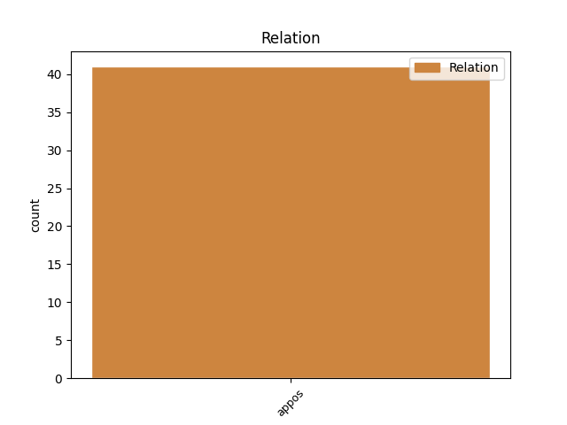
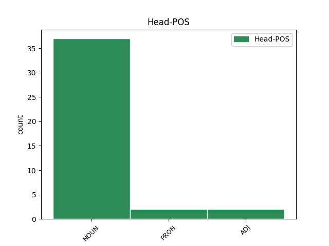
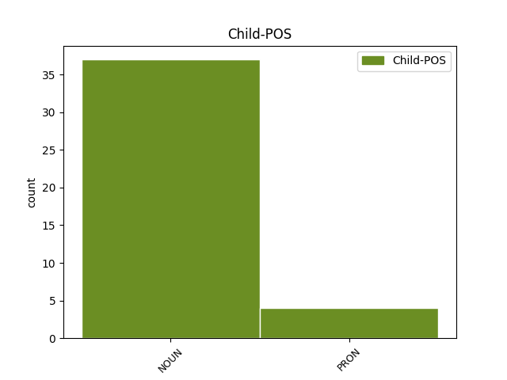

Distribution of features within this leaf



Agreement Rules sorted by frequency.
- When the dependent token is the appositional modifier(appos) of the head token, and the head token is NOUN and the dependent token is NOUN.
1 SPAUDOS _ _ _ _ 0 _ _ _
2 ŽANRŲ _ _ _ _ 0 _ _ _
3 ĮVADAS įvadas NOUN dkt.vyr.vns.V. Case=Nom|Gender=Masc|Number=Sing 0 _ _ _
4 – _ _ _ _ 0 _ _ _
5 KRITIŠKO _ _ _ _ 0 _ _ _
6 SKAITYTOJO _ _ _ _ 0 _ _ _
7 UGDYMAS ugdymas NOUN dkt.vyr.vns.V. Case=Nom|Gender=Masc|Number=Sing 3 appos _ _
1 Spaudos _ _ _ _ 0 _ _ _
2 tekstų _ _ _ _ 0 _ _ _
3 tyrimai _ _ _ _ 0 _ _ _
4 aktualūs _ _ _ _ 0 _ _ _
5 dar _ _ _ _ 0 _ _ _
6 ir _ _ _ _ 0 _ _ _
7 dėl _ _ _ _ 0 _ _ _
8 to _ _ _ _ 0 _ _ _
9 , _ _ _ _ 0 _ _ _
10 kad _ _ _ _ 0 _ _ _
11 žiniasklaida žiniasklaida NOUN dkt.mot.vns.V. Case=Nom|Gender=Fem|Number=Sing 0 _ _ _
12 – _ _ _ _ 0 _ _ _
13 viena vienas PRON įv.mot.vns.V. Case=Nom|Definite=Ind|Gender=Fem|Number=Sing|PronType=Ind 11 appos _ _
14 labiausiai _ _ _ _ 0 _ _ _
15 per _ _ _ _ 0 _ _ _
16 pastarąjį _ _ _ _ 0 _ _ _
17 dešimtmetį _ _ _ _ 0 _ _ _
18 pakitusių _ _ _ _ 0 _ _ _
19 realijų _ _ _ _ 0 _ _ _
20 Lietuvoje _ _ _ _ 0 _ _ _
21 , _ _ _ _ 0 _ _ _
22 todėl _ _ _ _ 0 _ _ _
23 jos _ _ _ _ 0 _ _ _
24 transformacijos _ _ _ _ 0 _ _ _
25 tokios _ _ _ _ 0 _ _ _
26 svarbios _ _ _ _ 0 _ _ _
27 , _ _ _ _ 0 _ _ _
28 bet _ _ _ _ 0 _ _ _
29 tuo _ _ _ _ 0 _ _ _
30 pačiu _ _ _ _ 0 _ _ _
31 taip _ _ _ _ 0 _ _ _
32 mažai _ _ _ _ 0 _ _ _
33 tyrinėtos _ _ _ _ 0 _ _ _
34 . _ _ _ _ 0 _ _ _
1 Patikimiausi _ _ _ _ 0 _ _ _
2 - _ _ _ _ 0 _ _ _
3 ugniagesiai _ _ _ _ 0 _ _ _
4 , _ _ _ _ 0 _ _ _
5 nepatikimiausi nepatikimas ADJ bdv.aukšč.vyr.dgs.V. Case=Nom|Definite=Ind|Degree=Sup|Gender=Masc|Number=Plur 0 _ _ _
6 - _ _ _ _ 0 _ _ _
7 tautos _ _ _ _ 0 _ _ _
8 išrinktieji išrinktasis NOUN dkt.vyr.dgs.V. Case=Nom|Gender=Masc|Number=Plur 5 appos _ _
1 Kai _ _ _ _ 0 _ _ _
2 išnyksta _ _ _ _ 0 _ _ _
3 visų _ _ _ _ 0 _ _ _
4 jausmų _ _ _ _ 0 _ _ _
5 ribos _ _ _ _ 0 _ _ _
6 , _ _ _ _ 0 _ _ _
7 kai _ _ _ _ 0 _ _ _
8 nesuvoki _ _ _ _ 0 _ _ _
9 , _ _ _ _ 0 _ _ _
10 kur _ _ _ _ 0 _ _ _
11 prasideda _ _ _ _ 0 _ _ _
12 skausmas _ _ _ _ 0 _ _ _
13 ir _ _ _ _ 0 _ _ _
14 kur _ _ _ _ 0 _ _ _
15 jis _ _ _ _ 0 _ _ _
16 baigiasi _ _ _ _ 0 _ _ _
17 , _ _ _ _ 0 _ _ _
18 kas _ _ _ _ 0 _ _ _
19 yra _ _ _ _ 0 _ _ _
20 neapykanta _ _ _ _ 0 _ _ _
21 , _ _ _ _ 0 _ _ _
22 o _ _ _ _ 0 _ _ _
23 kas kas PRON įv.V. Case=Nom|Definite=Ind|PronType=Int 0 _ _ _
24 – _ _ _ _ 0 _ _ _
25 meilė meilė NOUN dkt.mot.vns.V. Case=Nom|Gender=Fem|Number=Sing 23 appos _ SpaceAfter=No
26 . _ _ _ _ 0 _ _ _
Disagree Examples:
1 Valstybės _ _ _ _ 0 _ _ _
2 biudžetas biudžetas NOUN dkt.vyr.vns.V. Case=Nom|Gender=Masc|Number=Sing 0 _ _ _
3 - _ _ _ _ 0 _ _ _
4 nuomonių _ _ _ _ 0 _ _ _
5 sūkuryje sūkurys NOUN dkt.vyr.vns.Vt. Case=Loc|Gender=Masc|Number=Sing 2 appos _ _
1 Kita _ _ _ _ 0 _ _ _
2 vertus _ _ _ _ 0 _ _ _
3 , _ _ _ _ 0 _ _ _
4 griežtai _ _ _ _ 0 _ _ _
5 laikantis _ _ _ _ 0 _ _ _
6 statistinio _ _ _ _ 0 _ _ _
7 reprezentatyvumo _ _ _ _ 0 _ _ _
8 , _ _ _ _ 0 _ _ _
9 viename _ _ _ _ 0 _ _ _
10 tyrime _ _ _ _ 0 _ _ _
11 imti _ _ _ _ 0 _ _ _
12 emigracijoje _ _ _ _ 0 _ _ _
13 buvusieji _ _ _ _ 0 _ _ _
14 metus _ _ _ _ 0 _ _ _
15 ir _ _ _ _ 0 _ _ _
16 daugiau _ _ _ _ 0 _ _ _
17 , _ _ _ _ 0 _ _ _
18 visuose _ _ _ _ 0 _ _ _
19 kituose kitas PRON įv.vyr.dgs.Vt. Case=Loc|Definite=Ind|Gender=Masc|Number=Plur|PronType=Ind 0 _ _ _
20 – _ _ _ _ 0 _ _ _
21 pusę pusė NOUN dkt.mot.vns.G. Case=Acc|Gender=Fem|Number=Sing 19 appos _ _
22 metų _ _ _ _ 0 _ _ _
23 . _ _ _ _ 0 _ _ _
1 Spalvų _ _ _ _ 0 _ _ _
2 bei _ _ _ _ 0 _ _ _
3 judesio _ _ _ _ 0 _ _ _
4 daug _ _ _ _ 0 _ _ _
5 , _ _ _ _ 0 _ _ _
6 garso garsas NOUN dkt.vyr.vns.K. Case=Gen|Gender=Masc|Number=Sing 0 _ _ _
7 - _ _ _ _ 0 _ _ _
8 nulis nulis NOUN dkt.vyr.vns.V. Case=Nom|Gender=Masc|Number=Sing 6 appos _ SpaceAfter=No
9 . _ _ _ _ 0 _ _ _
1 2 _ _ _ _ 0 _ _ _
2 . _ _ _ _ 0 _ _ _
3 Verslininkui _ _ _ _ 0 _ _ _
4 , _ _ _ _ 0 _ _ _
5 neturinčiam _ _ _ _ 0 _ _ _
6 įmonių _ _ _ _ 0 _ _ _
7 akcijų _ _ _ _ 0 _ _ _
8 , _ _ _ _ 0 _ _ _
9 pajų _ _ _ _ 0 _ _ _
10 ar _ _ _ _ 0 _ _ _
11 kitokių _ _ _ _ 0 _ _ _
12 dalyvavimą _ _ _ _ 0 _ _ _
13 įmonės _ _ _ _ 0 _ _ _
14 kapitale _ _ _ _ 0 _ _ _
15 žyminčių _ _ _ _ 0 _ _ _
16 kapitalo _ _ _ _ 0 _ _ _
17 dalių _ _ _ _ 0 _ _ _
18 arba _ _ _ _ 0 _ _ _
19 turinčiam _ _ _ _ 0 _ _ _
20 jų _ _ _ _ 0 _ _ _
21 mažiau _ _ _ _ 0 _ _ _
22 negu _ _ _ _ 0 _ _ _
23 25 _ _ _ _ 0 _ _ _
24 procentus _ _ _ _ 0 _ _ _
25 , _ _ _ _ 0 _ _ _
26 darbuotojų _ _ _ _ 0 _ _ _
27 skaičius _ _ _ _ 0 _ _ _
28 apskaičiuojamas _ _ _ _ 0 _ _ _
29 prie _ _ _ _ 0 _ _ _
30 vieneto _ _ _ _ 0 _ _ _
31 ( _ _ _ _ 0 _ _ _
32 verslininkas _ _ _ _ 0 _ _ _
33 ) _ _ _ _ 0 _ _ _
34 pridedant _ _ _ _ 0 _ _ _
35 verslininko _ _ _ _ 0 _ _ _
36 samdomų _ _ _ _ 0 _ _ _
37 darbuotojų _ _ _ _ 0 _ _ _
38 skaičių _ _ _ _ 0 _ _ _
39 , _ _ _ _ 0 _ _ _
40 balanse _ _ _ _ 0 _ _ _
41 nurodyto _ _ _ _ 0 _ _ _
42 turto _ _ _ _ 0 _ _ _
43 vertė _ _ _ _ 0 _ _ _
44 lygi _ _ _ _ 0 _ _ _
45 nuliui _ _ _ _ 0 _ _ _
46 , _ _ _ _ 0 _ _ _
47 o _ _ _ _ 0 _ _ _
48 metinės _ _ _ _ 0 _ _ _
49 pajamos pajamos NOUN dkt.mot.dgs.V. Case=Nom|Gender=Fem|Number=Plur 0 _ _ _
50 – _ _ _ _ 0 _ _ _
51 šio _ _ _ _ 0 _ _ _
52 verslininko _ _ _ _ 0 _ _ _
53 metinėms _ _ _ _ 0 _ _ _
54 pajamoms pajamos NOUN dkt.mot.dgs.N. Case=Dat|Gender=Fem|Number=Plur 49 appos _ SpaceAfter=No
55 , _ _ _ _ 0 _ _ _
56 nurodytoms _ _ _ _ 0 _ _ _
57 finansiniuose _ _ _ _ 0 _ _ _
58 dokumentuose _ _ _ _ 0 _ _ _
59 . _ _ _ _ 0 _ _ _
1 Grybus _ _ _ _ 0 _ _ _
2 daugiau _ _ _ _ 0 _ _ _
3 valgo _ _ _ _ 0 _ _ _
4 dzūkai _ _ _ _ 0 _ _ _
5 , _ _ _ _ 0 _ _ _
6 bulves bulvė NOUN dkt.mot.dgs.G. Case=Acc|Gender=Fem|Number=Plur 0 _ _ _
7 ir _ _ _ _ 0 _ _ _
8 jų _ _ _ _ 0 _ _ _
9 patiekalus _ _ _ _ 0 _ _ _
10 – _ _ _ _ 0 _ _ _
11 žemaičiai žemaitis NOUN dkt.vyr.dgs.V. Case=Nom|Gender=Masc|Number=Plur 6 appos _ SpaceAfter=No
12 . _ _ _ _ 0 _ _ _